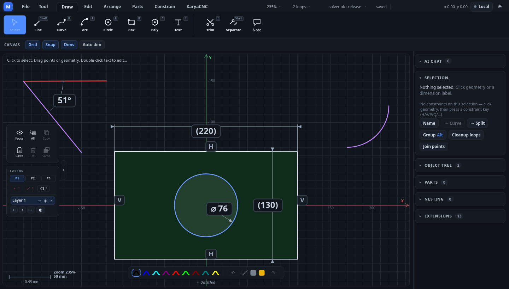

Selamat datang di Bantuan MiniSketch
MiniSketch adalah sketsa 2D berbasis batasan (constraint sketcher) yang berjalan di browser — tanpa instalasi, tanpa build step. Gambar dengan dimensi nyata (mm), tambahkan batasan geometri, buat bagian CNC dengan alat generator, susun pada lembar (nesting), dan kirim ke mesin KaryaCNC — semuanya dalam satu tab.
1. Mulai cepat (Quick Start)
- Buka MiniSketch lewat server lokal (
http://127.0.0.1:8090darinode server/serve.js) agar AI Chat dan jembatan WebSocket ke KaryaCNC lokal aktif, atau buka langsung dari disk (file://) untuk menggambar offline. - Lembar gambar kosong akan muncul dengan tema gelap. Ribbon atas berisi menu File dan Tool serta tab kerja: Draw, Edit, Arrange, Parts, Constrain, KaryaCNC.
- Pilih alat gambar di tab Draw (mis. Shift+B garis, B kurva, E lingkaran, R kotak, T teks) lalu klik di kanvas.
- Atur ukuran tepat lewat strip L / T / W / H di atas kanvas atau tambahkan dimensi (D), lalu tekan F9 bila memakai mode solver manual.
- Simpan proyek ke file
.sketchdengan Ctrl+S (atau Ctrl+Shift+S untuk nama baru). Setiap edit juga otomatis tersimpan sementara di browser.
1B. Konsep dasar CNC untuk pemula
Sebelum memotong di mesin atau menata nesting, pahami 4 aturan inti di MiniSketch:
- Loop tertutup vs garis terbuka: bentuk yang ujungnya benar-benar menyatu (mis. kotak, lingkaran, atau rangkaian garis yang kembali ke titik awal) otomatis terdeteksi sebagai loop tertutup dan diberi warna isi tipis. Nesting, Boolean, dan Extrude wall membutuhkan loop tertutup. Jika loop belum terdeteksi padahal tampak menyambung, pilih objek lalu klik Cleanup loops (Shift+L) atau Weld (Alt+W).
- Warna garis = operasi mesin: tidak ada pemetaan per layer untuk mesin. Hitam = Potong (Cut), Biru = Engrave, Merah = Drill/Gores, Hijau = Mark / Garis bantu / Lembar nesting (tidak dipotong sebagai jalur cut utama).
- Isi loop Gray & Yellow: klik di dalam loop lalu pilih Gray untuk menandai batas bahan/luar (semua di dalamnya ikut dibalik offset), atau Yellow untuk membalik arah offset satu kontur saja.
- Mode F1 / F2 / F3: F1 menggeser objek utuh, F2 (bawaan) mengedit titik/node, dan F3 memilih titik pertemuan (junction).


2. Semua fitur secara singkat
Setiap kartu di bawah membuka halaman penjelasan detail per fitur.
Draw — Menggambar
Garis, kurva Bézier, busur, lingkaran, kotak, poligon/bintang, teks, potong dan pisah.
Edit — Mengubah Objek
Transformasi, offset, geser, array, grup, boolean, join, fillet, bersihkan loop.
Arrange — Susun Objek
Rata, tengah, distribusi, dan drag wall untuk nesting manual.
Constrain — Batasan & Dimensi
Coincident, horizontal/vertikal, sejajar, tegak lurus, sama panjang, dimensi penggerak.
Tools — 13 Generator & Clone
Box maker, Hinge/Slide/Pull top, Gear, Slot, Flex pattern, Extrude wall, Spiral, Text weld, Array/Clone.
Parts — Part & Assembly
Buat part kaku dan gabungkan dengan mate (pin, slider, string, arc).
KaryaCNC — Kirim ke Mesin
Dialog kirim, estimasi biaya, dan warna operasi (hitam potong, merah gores, dll).
Berkas — Open / Import / Save / Export
Buka .sketch / .json, impor gabung, simpan, ekspor SVG.
Import — SVG / PDF / CDR / DXF
Impor file vektor dengan pengaturan grup, warna, teks, dan clipping path.
Teks & Font
Objek teks, font single-line / system / imported, ukuran, jarak huruf, dan fit ke kurva.
Image Trace — Jejak Gambar
Jejakkan gambar hasil paste atau seretan menjadi kurva yang bisa diedit.
Nesting — Tata Letak Potongan
Susun loop tertutup di lembar dengan algoritma genetika + NFP di browser.
Settings — Pengaturan
Renderer, Geometry, Comments, Curves, Text, Paste, CNC, dan AI chat.
Pintasan Keyboard
Semua tombol pintas berkas, alat, edit, constraint, tampilan, dan mesin.
3. Tentang aplikasi ini
- Constraint solver nyata — coincidance, horizontal/vertikal, midpoint/on-line, perpendicular, parallel, angle, aspect; tiga mode solve (saat dilepas, live saat drag, manual F9).
- Boolean eksak pada Bézier asli — union / intersect / subtract dijalankan pada geometri kubik asli, kurva tetap kurva (tidak disegi poligon).
- Tiga belas alat generator parametrik — kotak, gear, finger joint, living hinge, spiral, slot, dan lain-lain. Double-click hasil untuk membuka dialog parameternya kembali dan rebuild di tempat.
- Nesting dan image tracing bawaan — mesin nest GA + NFP lokal (port KaryaCNC nestjs2) dan tracer raster→kurva dengan pengaturan yang bisa dibuka kembali.
- Dua bahasa, satu saklar — File → Lang: English / Indonesia menuliskan ulang panduan dan Help.
- Local-first dan pribadi — autosave ke browser (dengan crash-recovery
.bak), simpan JSON.sketchyang dapat dibaca, ekspor SVG, dan Ctrl+C / Ctrl+Shift+C menyalin ke clipboard dalam tiga bentuk sekaligus. AI chat adalah bring-your-own-key; tidak ada kunci yang dikirim bersama repositori. - Zero build — tag
<script>biasa, berkas statis, bekerja langsung dari disk.
http://127.0.0.1:8090/index.html saat server berjalan).